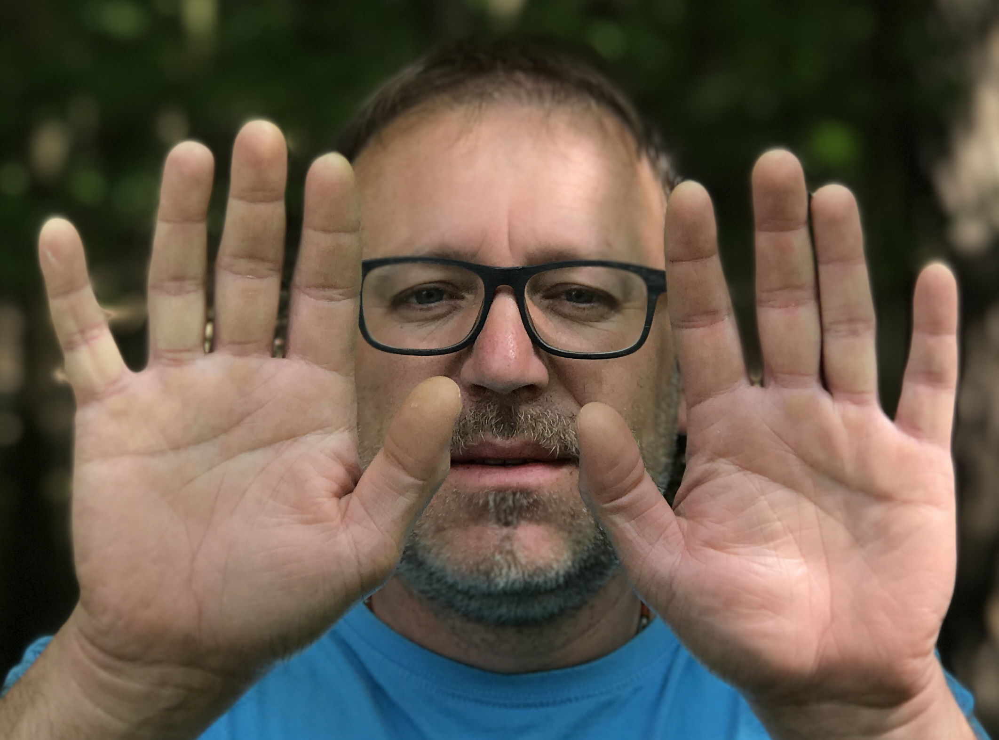

Masáž je příjemný a velmi účinný způsob regenerace a relaxace.
Uvolňuje fyzické i duševní napětí, zmírňuje bolesti a napětí svalů, zvyšuje pružnost těla a rozsah pohybu v kloubech, urychluje obnovu poškozených tkání, stimuluje krevní oběh a urychluje odplavování toxinů, podporuje lymfatický oběh a nervový systém, odstraňuje únavu, mírní migrény a celkově posiluje odolnost vůči nemocem…
Svou masáž si můžete dopřát i v pohodlí domova. Rád za Vámi přijedu a Vy si tak můžete masáž vychutnat bez nutnosti kamkoli cestovat. Vaši oblíbenou masáž si můžete dopřát prakticky všude, a to při zachování vysokého standardu prováděných služeb. Potřebné vybavení – masážní stůl, oleje atd. – přivezu s sebou… Prostěradlo a ručníky si většinou dodává každý své…
Jsem narozen v Praze, žiji v Jílovém u Prahy, znamením Blíženec (ale už tak trochu Rak), s energetickým číslem 2 (nebo také 11)…
Mým velkým masérským guru byl můj nevidomý strýc Karel, který se oboru věnoval více než 40 let. Sám jsem se poprvé s masérskou praxí setkal ve svých 25 letech…
Mezi má nejvýznamnější studia patří absolvování Konzervatoře Jaroslava Ježka v oboru „pohybového divadla a improvizace“. Nestal se ze mne herec, ale tato „škola“ pro mne byla velkou školou individuálního rozvoje…
Následně jsem se 20 let věnoval audiovizuální tvorbě – výrobě filmových dokumentů, a také zdravovědních a vzdělávacích pořadů. Spoluzaložil jsem projekt „Cesta za snem“, jehož cílem byly (a stále jsou) motivační projekty pro osoby po poranění míchy. Věnoval jsem se i další projektům, které mne nakonec dovedly až na pokraj mých vlastních sil...
K masérské praxi jsem se vrátil absolvováním intenzivního rekvalifikačního kurzu a dalších specializovaných seminářů v EduSpa College. Sám jsem se zbavil únavy a začal znovu a naplno žít. Pochopil jsem, že tělo je fungující celek, který potřebuje péči a masáž je téměř nezbytným doplňkem – nejen regeneračním, relaxačním, ale i duchovním… Několik let jsem vedl víkendové semináře věnované „regeneraci těla a ducha“...
Miluji chůzi a cyklistiku, jsem nadšeným vodákem a muzikantem… Dlouhodobě se zajímám o indiánské kultury Severní a Jižní Ameriky a velkou inspirací je mi jejich přirozený soulad s přírodou a se sebou samým, který vede k trvalému zdraví a spokojenému životu…
Miloslav „Mejla“ Doležal, Váš mobilní masér
Nabízím širokou škálu procedur přizpůsobených vašim individuálním potřebám:
Celková masáž zad, šíje, nohou a rukou. Je vhodná na zmírnění bolestí zad a celého pohybového aparátu. Odstraňuje únavu a posiluje regeneraci.
Jemnější varianta regenerační masáže, ideální k odpočinku a uvolnění. Jemné techniky aktivizují lymfatický systém.
Hluboce relaxační masáž s harmonizací toku energie. Dokonale prokrví každou část těla, zklidní mysl a pomůže tělu při detoxikaci.
Velmi jemná pomalá olejová masáž pro maximální uvolnění, zaměřená na probuzení smyslů a prohloubení vnímání doteku. Může vést až k orgasmickému prožitku.
Velmi uvolňující léčivé ošetření hlavy a celé šíje. Zbavuje napětí v oblasti krku, ramen, šíje a mírní psychickou únavu.
Cílem je připravit sportovce na sportovní výkon nebo naopak po výkonu zbavit únavy a pomoci při zotavení.
Jemná „energeticko-manuální“ masáž zad. Významným způsobem regeneruje meziobratlové ploténky a uvolňuje celá záda od napětí.
Teplo z kamenů pozitivně působí na svalová vlákna, zlepšuje cirkulaci krve a zrychluje metabolismus tkání.
Účinné mírnění bolestí pomocí pružných samolepících pásek. Může ochránit před zraněním a podporuje proces hojení.
Alternativní metoda k urychlení léčby zánětů kloubů, karpálních tunelů, bolestí hlavy, zad nebo celkového napětí i dalších nejen pohybových problémů.
Individuální cvičení vedoucí k odstranění bolestí zad, šíje a hlavy. Strečink, posilování, jóga, čchi-kung…
V provozovně „Jílové“ i u Vás doma jsou ceny stejné pro všechny druhy masáží:
👍 Věrnostní bonusy (slevy): od 20 procedur 10%, od 40 procedur 20%, od 60 procedur 30%, od 80 procedur 40%
🧑🦽➡️ Slevy ZTP a senioři: 20% – 50% podle dohody.
🚗 Doprava: Při výjezdech k Vám domů se připočítává 10 Kč/km jednosměrné jízdy od Jílového u Prahy.
📧 Email: mejladol@gmail.com
🆔 IČ: 43655408
📬 Datová schránka: rahuis6
🕒 Pracovní doba: Pracovní dny (a dle dohody i víkendy) 9:00 – 19:00
📞 Volejte: 602 626 474📍 Provozovna: Jílové u Prahy – Masarykovo náměstí 4 – „na dvorečku“ proti Fyzioterapii.
🚗 Mobilní masáže (u vás doma): Preferuji Jílové u Prahy, Jesenice, Vestec, Kamenice, Velké Popovice, Kamenný Přívoz, Týnec nad Sázavou, Netvořice a okolí. Po dohodě dojíždím i do Prahy, Říčan, Benešova...